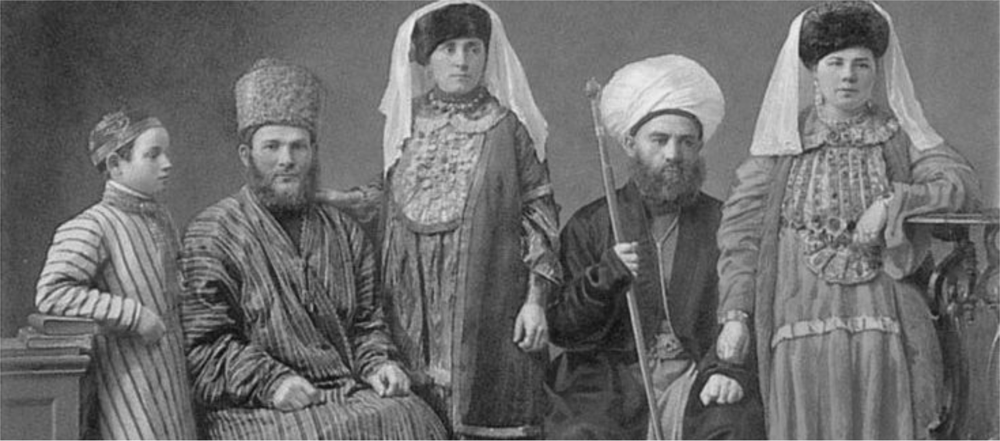
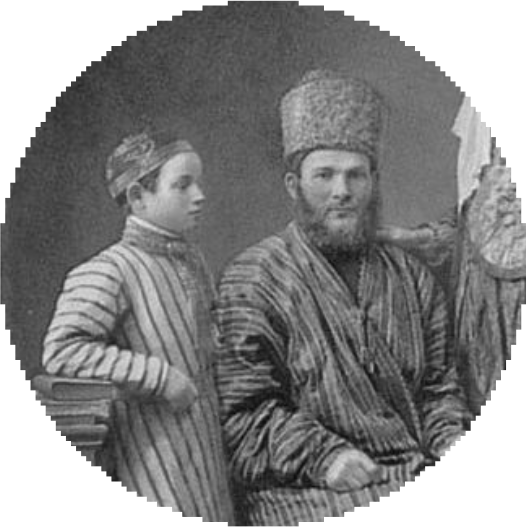
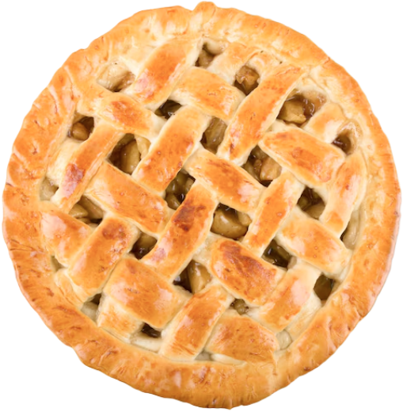
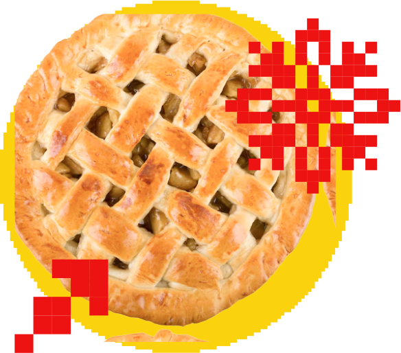

Фотографии

В проекте используются черно-белые исторические фотографии, в основном они занимают весь экран, однако возможны альтернативные варианты использования



Исторические фото также могут быть вписаны в пиксельный круг, используя прежнюю цветовую схему. Фотографии пирогов в контексте рецептовдолжны быть цветными и не иметь фона, в остальных случаях к ним применяются те же правила Обьекты на фотографиях могут быть выделены пиксельной обводкой в фирменных цветах, также на любые фотографии могут быть наложены элементы узоров в цветах узоров